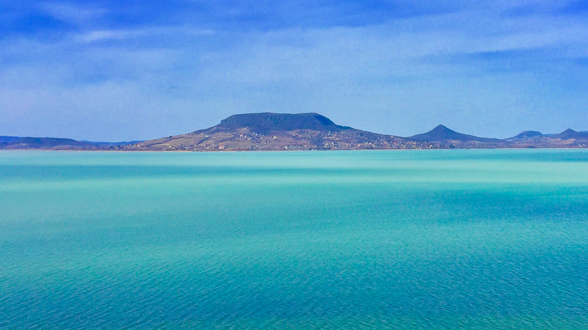
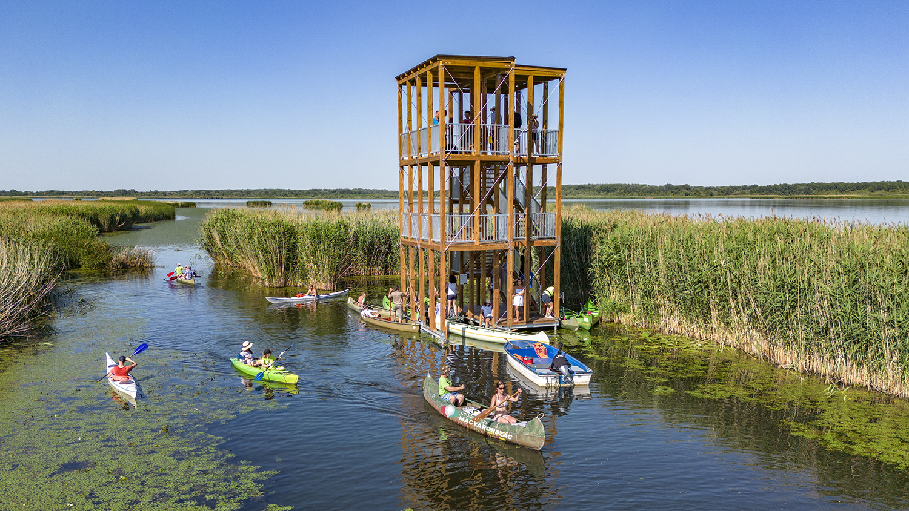

Magyarország legnépszerűbb tavai
Balaton

A Balaton Magyarország legnagyobb tava, amely a Dunántúlon helyezkedik el, Dél-Dunántúl és Észak-Dunántúl között. Gyakran nevezik a "magyar tengernek" is a mérete illetve a turisztikai jelentősége miatt, amely nem csak nyáron jelentős. A tó partján számos híres üdülőváros található, mint például Siófok, Balatonfüred, Balatonlelle és Keszthely. A Balaton vize nyáron kellemesen meleg, így ideális fürdőzésre és vízi sportokra is. Az északi part dombosabb, míg a déli part laposabb, így más-más élményt nyújt a látogatóknak, akár a látványt tekintve, akár a fürdőzi .
A Badacsony környéke híres a szőlőtermesztésről és a kiváló borokról. Télen a Balaton gyakran befagy, és sokan korcsolyázásra vagy fakutyázásra használják. A Balaton-felvidéki Nemzeti Park gazdag természeti és kulturális értékekkel rendelkezik. A tó vize sekély, ezért gyorsan felmelegszik a nyári hónapokban. A Balaton környéke számos fesztiválnak ad otthont, például a Balaton Sound és a Művészetek Völgye.
Tisza-tó

A Tisza-tó Magyarország második legnagyobb tava, amelyet mesterségesen hoztak létre az 1970-es években. A tó a Tisza folyó vizének felduzzasztásával jött létre, így egyedülálló ökoszisztémát teremtett. A Tisza-tavi madárrezervátum Európa egyik legjelentősebb vizes élőhelye. A tó ideális helyszín horgászok, kajakosok és természetkedvelők számára. A Poroszlói Ökocentrum interaktív kiállításai révén bemutatja a tó élővilágát.
A tó környékén több kerékpárút is található, így biciklivel könnyen körbejárható. A Tisza-tó vize sekély és gyorsan felmelegszik, ezért nyáron fürdőzésre is alkalmas. A természetbarátok számára a vízi túrák lehetőséget adnak a nádrengeteg és a rejtett csatornák felfedezésére. A tóhoz tartozó holtágak és szigetek változatos élőhelyeket biztosítanak számos állatfaj számára. Egyre népszerűbb turisztikai célpont, különösen a természetkedvelők és az aktív kikapcsolódást keresők körében.
Szelidi-tó

A Szelidi-tó Bács-Kiskun megyében található, és a Duna egyik hajdani holtágából alakult ki. Ez az egyik legmelegebb vizű természetes tó Magyarországon. Vize enyhén sós és gyógyhatású, ezért sokan keresik fel egészségügyi célból is. A tó népszerű fürdőhely, ahol homokos part és sekély víz várja a látogatókat. A környéken jól kiépített üdülőtelepek és kempingek találhatók.
A horgászok számára kiváló lehetőségeket kínál, hiszen sokféle halfaj él a vizében. A parton számos vendéglátóhely és szórakozási lehetőség várja a látogatókat. A természetkedvelők számára a tó körüli tanösvény és a nádas érdekes látnivalókat kínál. Vize nyáron gyorsan felmelegszik, így ideális a családok számára is. A Szelidi-tó csendesebb, nyugodtabb légköre vonzza azokat, akik a Balaton tömegét szeretnék elkerülni.